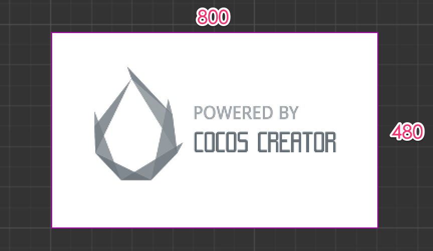
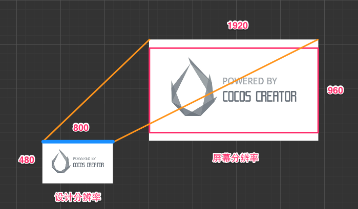
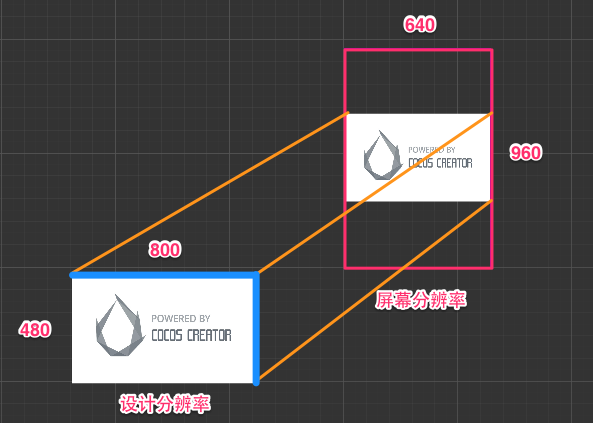

多分辨率适配方案
Cocos Creator 在设计之初就致力于解决一套资源适配多种分辨率屏幕的问题。简单概括来说，我们通过以下几个部分完成多分辨率适配解决方案：
- Canvas（画布）组件随时获得设备屏幕的实际分辨率并对场景中所有渲染元素进行适当的缩放。
- Widget（对齐挂件）放置在渲染元素上，能够根据需要将元素对齐父节点的不同参考位置。
- Label（文字）组件内置了提供各种动态文字排版模式的功能，当文字的约束框由于 Widget 对齐要求发生变化时，文字会根据需要呈现完美的排版效果。
- Sliced Sprite（九宫格精灵图）则提供了可任意指定尺寸的图像，同样可以满足各式各样的对齐要求，在任何屏幕分辨率上都显示高精度的图像。
接下来我们首先了解设计分辨率、屏幕分辨率的概念，才能理解 Canvas（画布）组件的缩放作用。
设计分辨率和屏幕分辨率
设计分辨率 是内容生产者在制作场景时使用的分辨率蓝本，而 屏幕分辨率 是游戏在设备上运行时的实际屏幕显示分辨率。
通常设计分辨率会采用市场目标群体中使用率最高的设备的屏幕分辨率，比如目前安卓设备中 800x480 和 1280x720 两种屏幕分辨率，或 iOS 设备中 1136x640 和 960x640 两种屏幕分辨率。这样当美术或策划使用设计分辨率设置好场景后，就可以自动适配最主要的目标人群设备。
那么当设计分辨率和屏幕分辨率出现差异时，Cocos Creator 会如何进行适配呢？
假设我们的设计分辨率为 800x480， 美术制作了一个同样分辨率大小的背景图像。

设计分辨率和屏幕分辨率宽高比相同
在屏幕分辨率的宽高比和设计分辨率相同时，假如屏幕分辨率是 1600x960，正好将背景图像放大 1600/800 = 2 倍 就可以完美适配屏幕。这是最简单的情况，这里不再赘述。
设计分辨率宽高比大于屏幕分辨率，适配高度避免黑边
假设屏幕分辨率是 1024x768，在下图中以红色方框表示设备屏幕可见区域。我们使用 Canvas 组件提供的的 适配高度（Fit Height）模式，将设计分辨率的高度自动撑满屏幕高度，也就是将场景图像放大到 768/480 = 1.6 倍。
这是设计分辨率宽高比大于屏幕分辨率时比较理想的适配模式，如上图所示，虽然屏幕两边会裁剪掉一部分背景图，但能够保证屏幕可见区域内不出现任何穿帮或黑边。之后可以通过 Widget（对齐挂件）调整 UI 元素的位置，来保证 UI 元素出现在屏幕可见区域里，我们在下一节 对齐策略 中将会详细介绍。
设计分辨率宽高比小于屏幕分辨率，适配宽度避免黑边
假设屏幕分辨率是 1920x960，同样在下图中以红色方框表示设备屏幕可见区域。我们使用 Canvas 组件提供的 适配宽度（Fit Width）模式，将设计分辨率的宽度自动撑满屏幕宽度，也就是将场景放大 1920/800 = 2.4 倍。

在设计分辨率宽高比较小时，使用这种模式会裁剪掉屏幕上下一部分背景图。
不管屏幕宽高比如何，完整显示设计分辨率中的所有内容，允许出现黑边
最后一个例子，我们屏幕分辨率假设为 640 x 960 的竖屏，如果要确保背景图像完整的在屏幕中显示，需要同时开启 Canvas 组件中的 适配高度 和 适配宽度，这时场景图像的缩放比例是按照屏幕分辨率中较小的一维来计算的，在下图的例子中，由于屏幕宽高比小于 1，就会以宽度为准计算缩放倍率，即 640/800 = 0.8 倍。

在这种显示模式下，屏幕上可能会出现黑边，或超出设计分辨率的场景图像（穿帮）。尽管一般情况下开发者会尽量避免黑边，但如果需要确保设计分辨率范围的所有内容都显示在屏幕上，也可以采用这种模式。
根据屏幕宽高比，自动选择适配宽度或适配高度
如果对于屏幕周围可能被剪裁的内容没有严格要求，也可以不开启 Canvas 组件中任何适配模式，这时会根据屏幕宽高比自动选择 适配高度 或 适配宽度 来避免黑边。也就是说，设计分辨率宽高比大于屏幕分辨率时，会自动适配高度（上面第一张图）；设计分辨率宽高比小于屏幕分辨率时，会自动适配宽度（上面第二张图）。
Canvas 组件不提供分别缩放 x 和 y 轴缩放率，会使图像变形拉伸的适配模式
在 Cocos 引擎中，也存在称为 ExactFit 的适配模式，这种模式没有黑边，也不会裁剪设计分辨率范围内的图像。但是代价是场景图像的 x 和 y 方向的缩放倍率不同，图像会产生形变拉伸。
如果不介意图像形变，可以在不使用 Canvas 组件的情况下，使用引擎 API 来实现适配效果，详情可以参考 Cocos2d-JS 的屏幕适配方案。
在场景中使用 Canvas 组件
新建场景时，会自动在场景根节点上添加一个包含 Canvas 组件的节点。在 Canvas 组件上就可以设置上文中提到的选项：
- 设计分辨率（
Design Resolution） - 适配高度（
Fit Height） - 适配宽度（
Fit Width）
将 Canvas 节点作为所有图像渲染节点的根节点，这些节点就都可以自动享受 Canvas 智能适配多分辨率的缩放效果了。
编辑场景时 Canvas 的特性
在编辑场景时，Canvas 节点的尺寸（Size）属性会保持和 设计分辨率 一致，不能手动更改。
位置（Position）属性会保持在 (width/2, height/2)，也就是和设计分辨率相同大小的屏幕中心。
由于锚点（Anchor）属性的默认值会设置为(0.5, 0.5)，Canvas 会保持在屏幕中心位置，并且 Canvas 的子节点会以屏幕中心作为坐标系原点，这一点和 Cocos 引擎中的习惯不同，请格外注意。
运行时 Canvas 的特性
除了上述特性外，运行时 Canvas 组件还会有以下属性变化：
- 缩放（
Scale）：根据前文中描述的缩放倍率计算原则，将计算后的缩放倍率赋值给Scale属性。 - 尺寸（
Size）：在无黑边的模式中，Canvas 的Size属性会和屏幕分辨率保持一致。在有黑边的模式中，Canvas 的Size会保持设计分辨率不变。
由于运行时 Canvas 可以准确获得屏幕可见区域的尺寸，我们就可以根据这个尺寸来设置 UI 元素的对齐策略，来保证 UI 元素都能在屏幕可见区域正确显示。
下一步就请前往 对齐策略 了解详情。